Hint Countdown!
Hint
If t > 0 and t2 − 4 = 0, what is the value of t ?
h = -4.9t2 + 25t
The equation above expresses the approximate height h, in meters, of a ball t seconds after it is launched vertically upward from the ground with an initial velocity of 25 meters per second. After approximately how many seconds will the ball hit the ground?
A. 3.5 B. 4.0 C. 4.5 D. 5.0
For a polynomial p(x), the value of p(3) is −2. Which of the following must be true about p(x) ?
A. x − 5 is a factor of p(x). B. x − 2 is a factor of p(x) C. x + 2 is a factor of p(x) D. The remainder when p(x) is divided by x − 3 is −2.
Which of the following is an equivalent form of the equation of the graph shown in the xy-plane above, from which the coordinates of vertex A can be identified as constants in the equation?
A. y = (x + 3)(x - 5) B. y = (x - 3)(x + 5) C. y = x(x - 2) - 15 D. y = (x - 1)2 - 16
What is the sum of all values of m that satisfy 2m2 − 16m + 8 = 0 ?
A. -8 B. -4√3 C. 4√3 D. 8
y = x2 - 6x + 8
The equation above represents a parabola in the xy-plane. Which of the following equivalent forms of the equation displays the x-intercepts of the parabola as constants or coefficients?
A. y - 8 = x2 - 6x B. y + 1 = (x - 3)2 C. y = x(x - 6) + 8 D. y = (x - 2)(x - 4)
y = 3y = ax2 + b
In the system of equations above, a and b are constants. For which of the following values of a and b does the system of equations have exactly two real solutions?
A. a = -2, b = 2 B. a = -2, b = 4 C. a = 2, b = 4 D. a = 4, b = 3
The function f is defined by a polynomial. Some values of x and f(x) are shown in the table above. Which of the following must be a factor of f(x) ?
A. x - 2 B. x - 3 C. x - 4 D. x - 5
y = a(x - 2)(x + 4)
In the quadratic equation above, a is a nonzero constant. The graph of the equation in the xy-plane is a parabola with vertex (c, d). Which of the following is equal to d ?
A. x -9a B. x -8a C. x -5a D. x -2a
What are the solutions to 3x2 + 12x + 6 = 0 ?
A. x = −2 ± √2 B. x = −2 ± (√30⁄3) C. x −6 ± √2 D. x −6 ± 6√2
If the function f has five distinct zeros, which of the following could represent the complete graph of f in the xy-plane?
A. 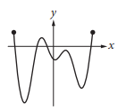
B. 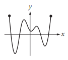
C. 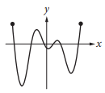
D. 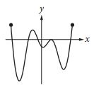
x = 2y + 5y = (2x - 3)(x + 9)
How many ordered pairs (x, y) satisfy the system of equations shown above?
A. 0 B. 1 C. 2 D. Infinitely many
The functions f and g, defined by f(x) = 8x2 - 2 and g(x) = -8x2 + 2, are graphed in the xy-plane above. The graphs of f and g intersect at the points (k, 0) and (-k , 0). What is the value of k ?
A. 1⁄4 B. 1⁄2 C. 1 D. 2
In the quadratic equation above, k and p are constants. What are the solutions for x ?
A. 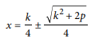
B. 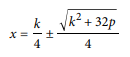
C. 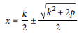
D. 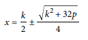
In the xy-plane, the graph of function f has x-intercepts at −3, −1, and 1. Which of the following could define f ?
A. f(x) = (x - 3)(x - 1)(x + 1) B. f(x) = (x - 3)(x - 1)2 C. f(x) = (x - 1)(x + 1)(x + 3) D. f(x) = (x + 1)2(x + 3)
f(x) = (x + 6)(x - 4)
Which of the following is an equivalent form of the function f above in which the minimum value of f appears as a constant or coefficient?
A. f(x) = x2 - 24 B. f(x) = x2 + 2x - 24 C. f(x) = (x - 1)2 - 21 D. f(x) = (x + 1)2 + 21
What are the solutions of the quadratic equation 4x2 - 8x - 12 = 0 ?
A. x = -1 and x = -3 B. x = -1 and x = 3 C. x = 1 and x = -3 D. x = 1 and x = 3
Which of the following is an example of a function whose graph in the xy-plane has no x-intercepts?
A. A linear function whose rate of change is not zero B. A quadratic function with real zeros C. A quadratic function with no real zeros D. A cubic polynomial with at least one real zero
4x2 - 9 = (px + t)(px - t)
In the equation above, p and t are constants. Which of the following could be the value of p ?
A. 2 B. 3 C. 4 D. 9
The vertex of the parabola in the xy-plane above is (0, c) . Which of the following is true about the parabola with the equation y = -a(x - b)2 + c ?
A. The vertex is (b, c) and the graph opens upward. B. The vertex is (b, c) and the graph opens downward. C. The vertex is (-b, c) and the graph opens upward. D. The vertex is (-b, c) and the graph opens downward.
In the xy-plane, the parabola with equation y = (x − 11)2 intersects the line with equation y = 25 at two points, A and B. What is the length of AB ?
A. 10 B. 12 C. 14 D. 16
What is the sum of the solutions to (x - 6)(x + 0.7) = 0 ?
A. -6.7 B. -5.3 C. 5.3 D. 6.7
The scatterplot below shows the amount of electric energy generated, in millions of megawatt-hours, by nuclear sources over a 10-year period.
Of the following equations, which best models the data in the scatterplot?
A. y = 1.674x2 + 19.76x − 745.73 B. y = -1.674x2 - 19.76x − 745.73 C. y = 1.674x2 + 19.76x + 745.73 D. y = -1.674x2 + 19.76x + 745.73
In the xy-plane, the graph of y = 3x2 - 14x intersects the graph of y = x at the points (0, 0) and (a, a). What is the value of a ?
x2 + 6x + 4
Which of the following is equivalent to the expression above?
A. (x + 3)2 + 5 B. (x + 3)2 - 5 C. (x - 3)2 + 5 D. (x - 3)2 - 5
ax3 + bx2 + cx + d = 0
In the equation above, a, b, c, and d are constants. If the equation has roots −1, −3, and 5, which of the following is a factor of ax3 + bx2 + cx + d?
A. x - 1 B. x + 1 C. x - 3 D. x + 5
The function f is defined by f(x) = (x + 3)(x + 1). The graph of f in the xy-plane is a parabola. Which of the following intervals contains the x-coordinate of the vertex of the graph of f ?
A. −4 < x < −3 B. −3 < x < 1 C. 1 < x < 3 D. 3 < x < 4
The expression (1⁄3)(x2) - 2 can be rewritten as (1⁄3)(x - k)(x + k), where k is a positive constant. What is the value of k ?
A. 2 B. 6 C. √2 D. √6
In the equation (ax + 3)2 = 36, a is a constant. If x = −3 is one solution to the equation, what is a possible value of a ?
A. -11 B. -5 C. -1 D. 0
h(t) = -16t2 + 110t + 72
The function above models the height h, in feet, of an object above ground t seconds after being launched straight up in the air. What does the number 72 represent in the function?
A. The initial height, in feet, of the object B. The maximum height, in feet, of the object C. The initial speed, in feet per second, of the object D. The maximum speed, in feet per second, of the object
y = x2 - 4x + 4y = 4 - x
If the ordered pair (x, y) satisfies the system of equations above, what is one possible value of x ?
Which of the following could be the equation of the graph above?
A. y = x(x - 2)(x + 3) B. y = x2(x - 2)(x + 3) C. y = x(x + 2)(x - 3) D. y = x2(x + 2)(x - 3)
y = x2 + 3x - 7y - 5x + 8 = 0
How many solutions are there to the system of equations above?
A. There are exactly 4 solutions. B. There are exactly 2 solutions. C. There is exactly 1 solution. D. There are no solutions.
x2 + x - 12 = 0
If a is a solution of the equation above and a > 0, what is the value of a ?
x + 1 = (2 / (x + 1))
In the equation above, which of the following is a possible value of x + 1 ?
A. 1 - √2 B. √2 C. 2 D. 4
A. -3 B. -2 C. 0 D. 2
The range of the polynomial function f is the set of real numbers less than or equal to 4. If the zeros of f are −3 and 1, which of the following could be the graph of y = f(x) in the xy-plane?
A. 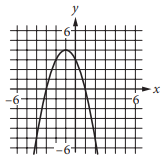
B. 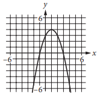
C. 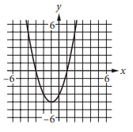
D. 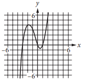
The graph of the function f, defined by f(x) = (-1⁄2)(x - 4)2, is shown in the xy-plane above. If the function g (not shown) is defined by g(x) = -x + 10, what is one possible value of a such that f(a) = g(a) ?
Submit Countdown!